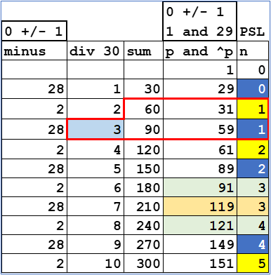
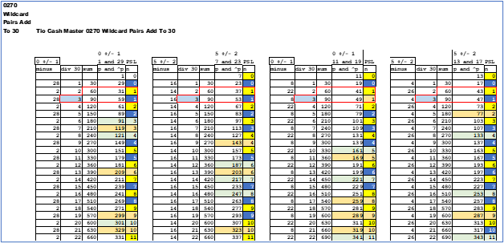

Just a quick look at *pairs. The view we have focused on so far is the *fam and its brother under the *wildcard.
a) *fam01 and *fam11
b) *fam07 and *fam17
c) *fam13 and *fam23
d) *fam19 and *fam29
The two sub families are a total distance of ten apart. There is another view to look at *pairs.
These are the cousins of two *fam that add up to thirty. So , here they are:
a) *fam01 + *fam29 = 30
b) *fam07 + *fam23 = 30
c) *fam11 + *fam19 = 30
d) *fam13 + *fam17 = 30
The below chart has five columns. Starting in the right two columns "p" and "^p" (PS)(Prime Suspect) and PSL (n) is the same color scheme used earlier ; blue and yellow are prime ; green and off yellow are non-prime. Next is the is the sum of the above row and the current row.
Look at the two PSLs of one (1) , add 31 + 59 = 90 , the sum. Then 90 / 30 = 3. There are matched pairs of the PSL ; two 0's , two 1's and on. So , there are two PS (Prime Suspect) on the same level (PSL) for the *pair. The "div 30" column is always plus one (+1) of the two PSLs.
 This view shows data for each *pair. Look across any row the "div 30" and "sum" are equal.